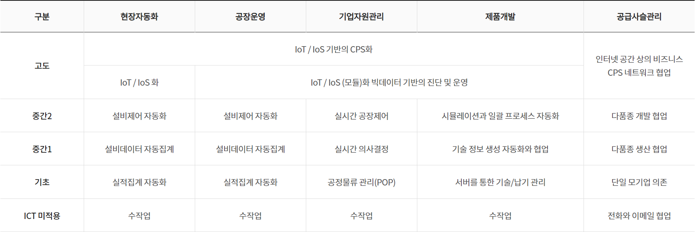

| 장점 | 단점 |
|---|---|
| 효율성 향상: 실시간으로 데이터를 처리하고 제어하여 시스템의 전체적인 효율성을 높임. | 시스템의 복잡성: 다양한 구성 요소와 상호작용으로 인해 시스템 설계와 유지 관리가 복잡함. |
| 자동화: 사람의 개입 없이 자동으로 작업을 수행함으로써 반복적인 작업을 줄이고, 인적 오류를 최소화함. | 보안 문제: 네트워크 연결로 인해 해킹, 데이터 유출 등의 보안 위협에 취약할 수 있음. |
| 안전성 증대: 센서와 제어 시스템이 상호작용하여 잠재적 위험을 실시간으로 감지하고 대응함. | 높은 비용: 고도의 기술적 요구와 장비가 필요하여 초기 구축 비용이 매우 높을 수 있음. |
정보화활용기술(스마트팩토리 등)
정보화 활용기술
- 공급망 관리(SCM) (Supply chain management)
-
- 공급망 관리를 의미하며, 이는 제품 생산을 위한 프로세스를 효율적으로 관리하고, 수요 예측을 통한 재고 관리 등을 포함한다. SCM은 원자재 구매부터 최종 제품 배송까지 모든 과정을 최적화하여 기업 경쟁력을 높이는데 중요한 역할을 한다.
- CRM (Customer relationship management)
-
- 고객 관계 관리를 의미하며, 이는 기업이 고객을 중심으로 비즈니스를 수행하기 위한 방법론으로 고객 정보를 수집하고 분석하여 개인화된 서비스를 제공하고 고객 만족도를 높이며 장기적인 관계를 유지하는 것을 목표로 한다. CRM은 이러한 활동을 지원하는 IT 시스템으로 마케팅, 판매, 서비스 등 여러 부서가 함께 사용할 수 있도록 설계되었다.
- ERP (Enterprise Resource Planning)
-
- 전사적 자원 관리를 의미하며, 이는 기업 내 생산, 재무, 회계, 영업, 구매, 재고 등 전반적인 비즈니스 프로세스를 시스템 하나에서 통합적으로 관리할 수 있게 해 주는 소프트웨어를 말한다. ERP 시스템을 사용하면 데이터 일관성과 정확성이 향상되며, 업무 프로세스 간소화와 생산성 향상을 기대할 수 있다. 대표적인 ERP 솔루션으로는 SAP, Oracle 등이 있다.
- KMS (Knowledge management system)
-
- 지식관리시스템으로 조직 내 지식, 정보, 경험 등을 체계적으로 수집, 정리, 공유함으로써 조직 효율성을 높이고자 하는 시스템이다. 이 시스템은 직원들이 필요한 정보를 쉽게 찾을 수 있도록 돕고, 중복된 작업을 줄여주며, 새로운 아이디어나 솔루션을 빠르게 공유할 수 있게 한다. 또한 기존 지식을 재활용하거나 새롭게 조합해 새로운 가치를 창출하는 데도 기여한다. 대표적인 지식 관리 시스템에는 위키, 블로그, 포럼, 소셜 네트워크 플랫폼 등이 있다.
MES(Manufacturing Execution System)
MES(Manufacturing Execution System)는 제조업체 생산 현장과 기업 상위 시스템(예: ERP, 기업 자원 관리 시스템) 간 연결을 담당하는 정보 시스템이다. MES는 생산 과정에서 발생하는 데이터를 실시간으로 수집하고, 이를 분석하여 생산 계획, 품질 관리, 자원 관리 등을 효율적으로 실행할 수 있도록 돕는다. 주로 제조 공장에서 생산 관리, 품질 관리, 추적성 확보 등과 같은 역할을 한다.
- MES의 주요 기능
-
- 생산 계획 실행 (Execution of Production Plans): MES는 상위 시스템에서 전달된 생산 계획을 바탕으로 작업 지시서를 생성하고, 이를 실제 생산 현장에서 실행할 수 있도록 돕는다.
- 실시간 데이터 수집 (Real-time Data Collection): MES는 생산 설비에서 발생하는 데이터를 실시간으로 수집하여, 생산 현장의 상태를 지속적으로 모니터링하고, 문제가 발생할 경우 즉시 대응할 수 있도록 한다.
- 자원 관리 (Resource Management): MES는 생산에 필요한 자원(원자재, 기계, 인력 등)의 관리와 배치를 최적화하여 생산성을 높인다.
- 품질 관리 (Quality Management): MES는 품질 검사를 자동화하거나 품질 데이터를 실시간으로 기록하여, 생산 과정에서 발생하는 품질 문제를 즉시 해결할 수 있도록 한다.
- 추적성 (Traceability): MES는 제품이 생산되는 과정에서의 모든 정보를 기록하고 관리하여, 생산된 제품의 모든 이력(원자재, 제조 과정 등)을 추적할 수 있다. 이는 리콜 등의 상황에서 중요한 역할을 한다.
- 설비 관리 (Equipment Management): 생산 설비의 가동 상태, 유지보수 이력 등을 관리하여 설비 가동률을 최적화하고, 장비 고장을 예방한다.
- 생산 모니터링 (Production Monitoring): MES는 생산 현장의 상태를 실시간으로 모니터링하여, 생산 속도, 품질, 설비 가동 상태 등을 지속적으로 점검한다.
- MES의 장점
-
- 실시간 생산 관리: 생산 공정의 상태를 실시간으로 파악할 수 있어, 즉각적인 대응이 가능하다.
- 효율성 향상: 불필요한 작업이나 자원 낭비를 줄이고, 생산성을 높인다.
- 품질 개선: 품질 데이터를 실시간으로 분석하여, 품질 문제를 미리 예방하고 품질 향상을 유도한다.
- 데이터 기반 의사결정: 생산 데이터를 바탕으로 보다 정확하고 신속한 의사결정을 내릴 수 있다.
- 추적성: 제품의 생산 이력을 정확히 추적할 수 있어, 문제 발생 시 원인 분석과 대응이 용이하다.
- MES와 ERP의 차이
-
- ERP(Enterprise Resource Planning)는 기업 전반적인 자원(인사, 회계, 재무, 공급망 등)을 관리하는 시스템이고, MES는 실제 생산 현장에서 작업을 관리하는 시스템이다.
- ERP가 전략적 관점에서 자원을 관리한다면, MES는 현장 중심으로 생산 공정을 실시간으로 관리한다.
결국 MES는 생산 현장에서의 효율적인 운영과 품질 관리에 집중하며, ERP와 협력하여 전체 기업 운영을 최적화하는 중요한 역할을 한다.
스마트팩토리 기술
스마트팩토리
스마트팩토리 단계적 구축 :
- 5대 요건
-
- 4M + 1E의 디지털화
- 4M+1E의 각 요소 (Man, Machinery, Material, Method, Environment) 들의 실시간으로 디지털 값을 인지하고, 측정 가능한 정보를 제공해야 하며, 통신을 통해 대화가 가능해야 함
- 지능화
- 알고리즘 또는 인공지능 등의 솔루션을 이용, 최적해 또는 예측가능한 해를 제공해야 함
- 통합
- 사회망과 가치사슬을 통해 단대단 (End-to-end) 의 정보 교류가 이뤄지도록 하는 수평적 통합과 최하위 수준인 기계장치부터 기업비즈니스 수준까지 수직적 통합을 지향
- 엔지니어링 지식의 창출
- 지속해서 정보를 확보하고 저장한 후, 이를 바탕으로 자동화를 위한 제조 지식을 점진적으로 창출할 수 있어야함
- 스마트 시스템과의 연결
- 향후에 발전할 스마트 제품들과 통신 표준에 의거해 연결이 가능해야함
- 4M + 1E의 디지털화
CPS
CPS(Cyber-Physical System)는 물리적 시스템과 컴퓨터 시스템이 상호작용하며 실시간으로 데이터를 처리하고 제어하는 시스템을 의미한다. 이러한 시스템은 센서, 액추에이터, 제어 시스템, 컴퓨터 네트워크 등을 포함하여, 물리적 세계와 디지털 세계가 긴밀하게 결합된 구조를 가진다.
- 주요 특징
-
- 물리적 시스템과 디지털 시스템의 통합: CPS는 물리적 장치와 이를 제어하는 컴퓨터 시스템을 결합하여, 현실 세계에서 발생하는 데이터를 실시간으로 처리하고 반응함
- 실시간 처리: CPS는 실시간으로 데이터를 수집하고 분석하여, 물리적 환경에 즉시 반응함
- 상호작용: CPS는 센서와 액추에이터를 통해 물리적 환경을 감지하고 제어하며, 이 과정에서 컴퓨터 시스템이 중요한 역할을 함
- 네트워크 연결: CPS는 인터넷을 통한 상호 연결을 통해 다양한 장치들과 정보를 주고받으며 협력함
- 적용 예시
-
- 스마트 홈 시스템: 집안의 온도, 조명, 보안 시스템 등을 실시간으로 제어하고 모니터링함
- 자율 주행 차량: 자동차가 센서와 컴퓨터 시스템을 통해 도로 상황을 인식하고, 안전하게 운전 결정을 내림
- 산업 자동화 시스템: 제조 공정에서 센서와 로봇을 이용해 생산 과정과 품질을 실시간으로 관리함
AR
증강현실(Augmented Reality, AR)은 현실 세계에 가상 정보를 실시간으로 덧붙여서 보여주는 기술이다. 즉, 사용자에게 실제 환경과 가상 환경을 동시에 경험하게 하는 기술로, 현실과 가상 요소가 실시간으로 결합되어 새로운 형태로 경험이 제공된다.
- 증강현실의 주요 특징
-
- 실시간 상호작용: 사용자와 환경 간의 실시간 상호작용을 지원한다. 예를 들어, 사용자가 스마트폰을 이용해 카메라로 현실을 비추면, 그 화면에 가상 객체가 실시간으로 겹쳐 보여진다.
- 현실과 가상 정보 결합: 현실 세계에 가상 객체나 정보를 덧붙여서 제공하므로, 사용자는 실제 환경을 바탕으로 추가된 정보를 확인할 수 있다.
- 위치 기반 서비스: GPS나 센서를 활용해 사용자의 위치를 파악하고, 그 위치에 맞는 가상 정보를 제공하는 것이 가능하다. 예를 들어, 특정 장소에서만 나타나는 가상 객체를 보여주는 방식이다.
- 증강현실의 구성 요소
-
- 하드웨어: AR 기술을 구현하기 위한 장치로, 스마트폰, 태블릿, AR 안경(예: Microsoft HoloLens, Magic Leap) 등이 있다.
- 소프트웨어: AR 환경을 구현하는 앱이나 프로그램으로, 현실 세계 영상과 가상 객체를 실시간으로 결합하고 이를 표시하는 소프트웨어가 필요하다. 예를 들어, ARKit(애플), ARCore(구글) 등이 있다.
- 인터페이스: 사용자와 가상 객체 간 상호작용을 가능하게 하는 시스템으로, 화면 터치, 음성 인식, 제스처 인식 등이 포함된다.
- 증강현실의 적용 분야
-
- 게임: 포켓몬 GO와 같은 게임은 증강현실 기술을 활용하여, 현실 세계에서 가상 캐릭터를 찾아내고 상호작용할 수 있도록 한다.
- 교육: AR을 활용한 학습은 학습자가 현실 세계와 가상 정보를 동시에 경험하면서 보다 직관적이고 몰입감 있는 학습을 할 수 있게 해준다. 예를 들어, 해부학 수업에서 AR로 인체 3D 모델을 실시간으로 보는 방식이다.
- 의료: 의사들이 AR을 이용해 환자의 신체 상태를 실시간으로 확인하거나 수술 중에 중요한 정보를 가상 화면으로 제공받을 수 있다.
- 상업 및 쇼핑: 가상으로 제품을 미리 보고 구매할 수 있도록 돕는 AR 기술이 쇼핑몰이나 온라인 쇼핑에서 점점 더 많이 사용되고 있다. 예를 들어, 가구를 구매하기 전에 집에 어떻게 배치될지 AR로 미리 확인할 수 있다.
- 관광 및 내비게이션: AR을 활용한 관광 안내 시스템은 현실 세계에 가상 관광 정보나 경로를 덧붙여 여행객이 더욱 쉽게 목적지를 찾을 수 있도록 도와준다.
- 증강현실의 장점
-
- 직관적이고 몰입감 있는 경험을 제공하여 사용자가 더욱 쉽게 정보를 이해하고, 상호작용할 수 있도록 한다.
- 현실 세계와 가상 정보를 실시간으로 결합함으로써, 다양한 산업에서 실용적인 활용이 가능하다.
- 위치 기반 서비스나 맞춤형 정보 제공이 가능하여, 개인화된 경험을 제공할 수 있다.
- 증강현실의 한계
-
- 기술적 한계: 현재 AR 기술은 하드웨어나 소프트웨어 성능에 따라 경험하는 질이 달라지며, 완벽한 현실과 가상 정보 결합은 아직 기술적으로 도전적인 과제가 될 수 있다.
- 비용 문제: AR을 구현하기 위한 장치나 소프트웨어가 고가일 수 있으며, 이는 상용화와 대중화에 장애물이 될 수 있습니다.
- 지속적인 개발 필요: AR 기술은 계속해서 발전하고 있지만, 아직 많은 분야에서 적용이 제한적이다.
증강현실은 실제 환경에 가상 정보를 덧붙여 새로운 경험을 제공하는 혁신적인 기술이다. 다양한 산업에서 유용하게 활용될 수 있으며, 앞으로 더욱 발전하면서 우리 일상 뿐만아니라 생산 현장에도 많은 변화를 가져올 것으로 기대된다.
인공지능(AI)

인공지능(AI, Artificial Intelligence)은 인간의 학습, 추론, 문제 해결, 지각, 언어 이해 등 지능적인 행동을 모방하는 기술이다. 컴퓨터가 데이터를 기반으로 패턴을 학습하고, 인간처럼 사고하거나 결정을 내릴 수 있도록 설계된다.
- 인공지능의 분류
-
- 기능적 분류
- 좁은 인공지능(Narrow AI)
- 특정 작업에 특화된 인공지능.
- 예: 음성 인식(시리, 구글 어시스턴트), 이미지 분석.
- 일반 인공지능(General AI)
- 인간처럼 다양한 작업을 수행할 수 있는 인공지능.
- 아직 개발 단계에 있음.
- 초인공지능(Super AI)
- 인간의 지능을 뛰어넘는 수준의 인공지능(이론적 단계).
- 좁은 인공지능(Narrow AI)
- 기술적 분류
- 머신러닝(Machine Learning)
- 데이터에서 패턴을 학습하여 스스로 개선하는 알고리즘.
- 예: 스팸 필터, 추천 시스템.
- 딥러닝(Deep Learning)
- 인공신경망(ANN)을 기반으로 한 머신러닝의 고도화 기술.
- 예: 자율주행, 이미지 생성 AI.
- 자연어 처리(NLP, Natural Language Processing)
- 인간의 언어를 이해하고 생성하는 기술.
- 예: 번역기, 챗봇.
- 컴퓨터 비전(Computer Vision)
- 이미지와 영상을 분석하여 인식하는 기술.
- 예: 얼굴 인식, 의료 영상 분석.
- 머신러닝(Machine Learning)
- 기능적 분류
- 인공지능의 주요 기술 및 응용 분야
-
- 의료
- 질병 진단, 신약 개발, 의료 영상 분석.
- 예: AI 기반 암 진단 시스템.
- 질병 진단, 신약 개발, 의료 영상 분석.
- 제조업
- 품질 검사, 예측 유지보수, 생산 자동화.
- 품질 검사, 예측 유지보수, 생산 자동화.
- 자동차
- 자율주행, 차량 안전 시스템.
- 자율주행, 차량 안전 시스템.
- 금융
- 사기 탐지, 주식 거래 알고리즘, 고객 서비스.
- 사기 탐지, 주식 거래 알고리즘, 고객 서비스.
- 교육
- 맞춤형 학습 시스템, 자동 채점 시스템.
- 맞춤형 학습 시스템, 자동 채점 시스템.
- 엔터테인먼트
- 콘텐츠 추천, 게임 AI, 영상 및 음악 생성.
- 의료
- 장점과 한계
-
- 장점
- 대량의 데이터 분석 및 패턴 발견.
- 인간이 하기 어려운 반복 작업 자동화.
- 새로운 기술 및 제품 개발 촉진.
- 대량의 데이터 분석 및 패턴 발견.
- 한계
- 윤리적 문제(프라이버시, 일자리 대체).
- 데이터 편향(bias) 문제.
- 설명 가능성(Explainability)의 부족.
- 윤리적 문제(프라이버시, 일자리 대체).
- 장점
- 미래 전망
-
- 인공지능은 4차 산업혁명의 핵심 기술로, 다양한 산업의 혁신을 이끌고 있다.
- AI와 인간의 협업이 강화되고, 윤리적 AI 개발이 중요해질 전망이다.
- AI는 의료, 에너지, 환경 등 사회적 문제 해결에 기여할 것으로 기대된다.
- 인공지능은 4차 산업혁명의 핵심 기술로, 다양한 산업의 혁신을 이끌고 있다.
RFID
RFID (Radio Frequency Identification)는 무선 주파수를 이용하여 객체나 사람의 정보를 자동으로 식별하고 추적할 수 있는 기술이다. RFID 시스템은 태그(Tag), 리더(Reader), 그리고 백엔드 시스템으로 구성되며, 다양한 분야에서 자동화, 효율성 향상, 데이터 관리 등의 목적으로 사용된다.
- RFID의 구성 요소
-
- RFID 태그 (Tag): RFID 태그는 정보를 저장하고, 리더의 신호를 수신하여 데이터를 전송하는 장치이다. 주로 두 가지 유형이 있다.
- 수동형 태그 (Passive Tag): 자체 전원이 없이 리더의 신호를 이용하여 작동하며, 주로 가격이 저렴하고 긴 배터리 수명을 가진다.
- 능동형 태그 (Active Tag): 자체 전원을 가지고 있어, 보다 긴 거리에서 데이터 전송이 가능하다. 비쌌지만 긴 거리에서 사용된다.
- RFID 리더 (Reader): RFID 태그의 신호를 수신하여 데이터를 읽고 전송하는 장치로, 여러 주파수 대역에서 동작할 수 있다.
- 백엔드 시스템 (Backend System): 리더로부터 수집된 데이터를 처리하고 저장하는 시스템으로, 보통 데이터베이스나 ERP 시스템과 연계된다.
- RFID 태그 (Tag): RFID 태그는 정보를 저장하고, 리더의 신호를 수신하여 데이터를 전송하는 장치이다. 주로 두 가지 유형이 있다.
- RFID의 동작 원리
-
- RFID 시스템은 리더가 발산한 전파에 의해 태그가 활성화되고, 태그는 자기 식별 정보를 무선으로 리더에 전송한다.
- 리더는 이를 수신하고, 해당 정보를 백엔드 시스템에 전달하여 필요한 처리를 진행한다.
- RFID의 주요 응용 분야
-
- 물류 및 공급망 관리
- 재고 관리: RFID를 사용하여 물품을 실시간으로 추적하고 재고 상황을 자동으로 파악할 수 있다.
- 제품 추적: 제품이 생산라인에서부터 유통망을 거쳐 소비자에게 도달하는 과정까지 자동으로 추적할 수 있다.
- 교통 및 차량 관리
- 전자태그: RFID를 이용한 자동차 번호판 인식으로 주차장 통행료 징수, 자동차 출입 관리 등이 가능하다.
- 교통 통제: 자동차 운행 기록과 통행료 징수를 자동화하여 도로 시스템의 효율성을 높일 수 있다.
- 헬스케어
- 환자 추적: RFID 태그를 환자에게 부착하여 병원 내 위치를 추적하고, 의료 기록을 자동으로 업데이트할 수 있다.
- 약품 관리: 약품의 유통 및 재고를 RFID로 자동 추적하여 효율적인 관리를 할 수 있다.
- 소매업
- 자산 추적: RFID를 이용하여 매장 내 상품 위치와 재고를 실시간으로 관리하고, 도난 방지 기능을 제공한다.
- 자동 결제: RFID 태그가 부착된 제품을 리더에 태그하면 자동으로 결제가 이루어지는 시스템이 가능하다.
- 동물 관리
- 동물 추적: RFID를 사용하여 애완동물이나 농장 동물을 추적하고, 건강 관리 및 이동 경로 추적을 할 수 있다.
- 물류 및 공급망 관리
- RFID의 장점
-
- 자동화: 수작업 없이 자동으로 정보 추적이 가능하여 효율성을 크게 향상시킨다.
- 실시간 데이터 처리: 데이터를 실시간으로 추적하고, 즉각적인 반응을 가능하게 한다.
- 비접촉식 작업: 비접촉식으로 데이터를 읽을 수 있어 위생적이고 편리하다.
- RFID의 한계
-
- 비용 문제: 일부 능동형 태그나 고급 시스템은 높은 초기 비용을 요구할 수 있다.
- 신호 간섭: 금속이나 액체가 신호를 방해할 수 있어 특정 환경에서 신호 간섭이 발생할 수 있다.
- 보안 문제: 데이터의 무선 전송 과정에서 해킹이나 위조 등의 보안 위협이 존재할 수 있다.
RFID는 물류, 헬스케어, 교통 등 다양한 분야에서 효율적인 관리와 자동화를 가능하게 하는 혁신적인 기술이다. 다만, 초기 비용과 보안 문제 등의 한계가 있으므로, 이를 고려한 적절한 활용이 필요하다.